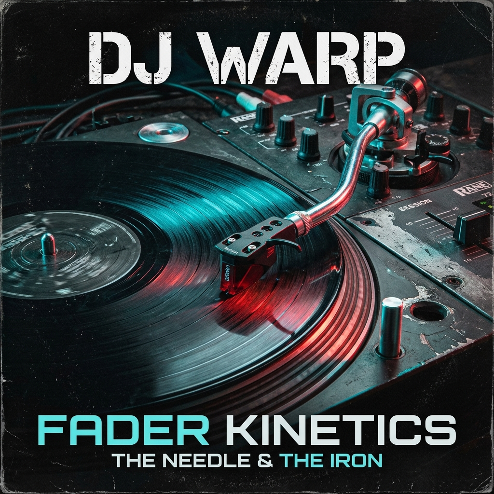

03 • Hybrid Architecture: Grid + Flexbox
The ultimate industry standard: CSS Grid orchestrates the outer page skeleton across two dimensions, while Flexbox powers the internal alignment of linear components, toolbars, list rows, and badge clusters.
DJ WARP
HEADLINE TURNTABLIST ALFÂNDEGA STAGE 01Pioneer of concrete turntablism and atmospheric boom bap. Fusing raw analog battle routines, acoustic hydrophone sampling, and heavy 808 sub-bass. 5 official catalog releases on the Drumtiks imprint.
5 Discography Releases (3 LPs + 2 EPs)
All Solo Works




Active Track Console: WARP THEORY (10 Cuts)
Fader Optics ActiveMaster Audio Engineering & Environmental Recording
Recorded natively onto 2-inch 24-track analog tape inside the Alfândega Vaults, Porto. Environmental impulse responses captured using binaural and hydrophone arrays along the Douro riverbank.
<!-- ========================================================================
1. MACRO 2D GRID CONTAINER (.hybrid-app-shell)
Establishes the structural 2D skeleton of the application.
======================================================================== -->
<div class="hybrid-app-shell" role="region" aria-label="DJ Warp Master Discography">
<!-- REGION 1: Hero Banner (Grid Area: area-hero) -->
<!-- Internal Micro-Layout: Flexbox horizontal alignment -->
<section class="shell-hero">
<div class="hero-dj-portrait">
<img src="assets/images/dj-warp-600w.webp" alt="DJ Warp">
</div>
<div class="hero-dj-details">
<h2>DJ WARP</h2>
<p>Pioneer of concrete turntablism and atmospheric boom bap.</p>
</div>
</section>
<!-- REGION 2: Audio Player Bar (Grid Area: area-player) -->
<!-- Internal Micro-Layout: Flexbox with flex-grow scrubber & margin-left auto -->
<section class="shell-player">
<div class="player-vinyl-cluster">
<span>● NOW MONITORING</span>
<strong>Alfândega Dock Pressure</strong>
</div>
<!-- Flex-grow: 1 scrubber -->
<div class="player-scrubber-bar">
<span>01:48</span>
<div class="scrubber-track"><div class="scrubber-fill"></div></div>
<span>04:12</span>
</div>
<!-- Pinned right via margin-left: auto -->
<div class="player-gear-badges">
<span>92.0 BPM</span>
</div>
</section>
<!-- REGION 3: Landmark Aside (Grid Area: area-sidebar) -->
<!-- Internal Micro-Layout: Flexbox vertical column stack -->
<aside class="shell-sidebar">
<div class="sidebar-box">
<h4>Drumtiks Festival Sets</h4>
<div class="stage-slot-item">
<span>Night 1: The 808 Vault</span>
<span>00:30</span>
</div>
</div>
</aside>
<!-- REGION 4: Catalog Mini-Strip (Grid Area: area-catalog) -->
<!-- Internal Micro-Layout: Flexbox horizontal album card strip -->
<section class="shell-catalog-strip">
<div class="album-mini-flex-row">
<div class="mini-album-card">WARP THEORY</div>
<div class="mini-album-card">CONCRETE PULSE</div>
<div class="mini-album-card">DUST & GROOVES</div>
<div class="mini-album-card">FADER KINETICS</div>
<div class="mini-album-card">CIRCUIT BENDER</div>
</div>
</section>
<!-- REGION 5: Tracklist Console (Grid Area: area-tracklist) -->
<!-- Internal Micro-Layout: Flexbox list of interactive rows -->
<section class="shell-tracklist">
<div class="console-track-row">
<div class="track-left-group">
<span>01</span>
<strong>Alfândega Dock Pressure</strong>
</div>
<div class="track-right-group">
<span>04:12</span>
<button>▶</button>
</div>
</div>
</section>
<!-- REGION 6: Landmark Footer / Liner Notes (Grid Area: area-liner) -->
<!-- Internal Micro-Layout: Flexbox horizontal distribution -->
<footer class="shell-liner-notes">
<div class="liner-left">Master Tape Audio Engineering</div>
<div class="liner-specs-cluster">180g Direct Metal Mastering</div>
</footer>
</div>/* ==========================================================================
PART 1: MACRO 2D GRID ARCHITECTURE
========================================================================== */
/* Approach A: Named Template Areas (ASCII visual layout) */
@media (min-width: 980px) {
body:has(#macro-approach-areas:checked) .hybrid-app-shell {
display: grid;
grid-template-columns: 320px 1fr 1fr;
grid-template-areas:
"area-hero area-hero area-hero"
"area-player area-player area-player"
"area-sidebar area-catalog area-catalog"
"area-sidebar area-tracklist area-tracklist"
"area-liner area-liner area-liner";
gap: 1.5rem;
}
.shell-hero { grid-area: area-hero; }
.shell-player { grid-area: area-player; }
.shell-sidebar { grid-area: area-sidebar; }
.shell-catalog-strip { grid-area: area-catalog; }
.shell-tracklist { grid-area: area-tracklist; }
.shell-liner-notes { grid-area: area-liner; }
}
/* Approach B: Named Grid Lines */
@media (min-width: 980px) {
body:has(#macro-approach-lines:checked) .hybrid-app-shell {
display: grid;
grid-template-columns:
[col-start sidebar-start] 340px [sidebar-end content-start]
1fr [mid-content]
1fr [content-end col-end];
}
body:has(#macro-approach-lines:checked) .shell-sidebar {
grid-column: sidebar-start / sidebar-end;
}
body:has(#macro-approach-lines:checked) .shell-tracklist {
grid-column: content-start / col-end;
}
}
/* Approach C: Line Coordinates & -1 Full Bleed */
@media (min-width: 980px) {
body:has(#macro-approach-coords:checked) .hybrid-app-shell {
display: grid;
grid-template-columns: 320px 1fr 1fr;
}
body:has(#macro-approach-coords:checked) .shell-hero { grid-column: 1 / -1; }
body:has(#macro-approach-coords:checked) .shell-player { grid-column: 1 / -1; }
body:has(#macro-approach-coords:checked) .shell-sidebar{ grid-column: 1 / 2; grid-row: 3 / span 2; }
}
/* ==========================================================================
PART 2: MICRO 1D FLEXBOX COMPONENTS
========================================================================== */
/* Player Bar: Horizontal alignment, fluid scrubber, pinned badges */
.shell-player {
display: flex;
align-items: center;
gap: 1.5rem;
flex-wrap: wrap;
}
.player-scrubber-bar {
flex-grow: 1; /* Consumes remaining horizontal space */
display: flex;
align-items: center;
gap: 0.75rem;
}
.player-gear-badges {
margin-left: auto; /* Pushes gear badges to far right */
display: flex;
gap: 0.5rem;
}
/* Sidebar: Vertical column of cards */
.shell-sidebar {
display: flex;
flex-direction: column;
gap: 1.5rem;
}
/* Track Row: Fluid horizontal alignment */
.console-track-row {
display: flex;
align-items: center;
justify-content: space-between;
gap: 1rem;
}
.track-right-group {
margin-left: auto; /* Pushes duration and button to right */
display: flex;
align-items: center;
gap: 0.75rem;
}Barebone Structural Blueprint: Hybrid Grid + Flexbox
Summary of Structural Requirements: The modern standard combines 2D CSS Grid for macro-layout (overall page architecture: landmarks, sidebars, main columns) with 1D Flexbox for micro-layout (internal contents: toolbars, scrubbers, track rows, pill tags). Below is the exact minimal skeleton required to implement this architecture with zero visual styling details.
<!-- Landmark: Main Container (Macro Grid) -->
<main class="macro-grid">
<!-- Header: Full bleed top banner (Flex Row) -->
<header class="area-hero micro-flex-row">
<div>Avatar</div>
<div>Bio</div>
</header>
<!-- Section: Audio toolbar (Flex Row + Scrubber) -->
<section class="area-player micro-flex-row">
<div>Title</div>
<div class="flex-stretcher">Timeline</div>
<div class="push-end">Badges</div>
</section>
<!-- Aside: Left Sidebar (Flex Column) -->
<aside class="area-sidebar micro-flex-col">
<div>Schedule Box 1</div>
<div>Schedule Box 2</div>
</aside>
<!-- Section: Main Content (Flex Column Rows) -->
<section class="area-content micro-flex-col">
<article class="track-row micro-flex-row">
<span>01 Title</span>
<span class="push-end">04:12</span>
</article>
</section>
<!-- Footer: Full bleed bottom notes (Flex Row) -->
<footer class="area-footer micro-flex-row">
<div>Liner Notes</div>
<div class="push-end">Specs</div>
</footer>
</main>/* 1. MACRO 2D GRID CONTAINER */
.macro-grid {
display: grid;
grid-template-columns: 320px 1fr 1fr;
grid-template-areas:
"hero hero hero"
"player player player"
"sidebar content content"
"footer footer footer";
gap: 1.5rem;
}
/* Assign Macro Grid Areas */
.area-hero { grid-area: hero; }
.area-player { grid-area: player; }
.area-sidebar { grid-area: sidebar; }
.area-content { grid-area: content; }
.area-footer { grid-area: footer; }
/* 2. MICRO 1D FLEXBOX CONTAINERS */
.micro-flex-row {
display: flex; /* Horizontal alignment */
flex-direction: row;
align-items: center;
gap: 1rem;
}
.micro-flex-col {
display: flex; /* Vertical stack */
flex-direction: column;
gap: 1rem;
}
/* Micro Flex Sizing & Positioning */
.flex-stretcher {
flex-grow: 1; /* Stretches to fill horizontal gap */
}
.push-end {
margin-left: auto; /* Pushes item to far right perimeter */
}Pedagogical Deep-Dive: Macro Grid vs. Micro Flexbox
A. Named Template Areas
grid-template-areas creates a direct visual map of your page in ASCII string format. Each word corresponds to an element's grid-area property. Empty cells can be designated with a period (.). It is the most readable macro-layout notation in CSS!
B. Named Grid Lines
By wrapping line names in square brackets (e.g. [sidebar-start] 340px [sidebar-end]), grid items can be placed semantically via grid-column: sidebar-start / sidebar-end rather than cryptic numeric coordinate indices.
C. Line Coordinates & -1 Edge
Numeric line coordinates count lines, not tracks! Specifying grid-column: 1 / -1 causes an element to span from the first line all the way to the last explicit grid line, creating full-bleed horizontal banners effortlessly.
D. Micro Content in Flexbox
Inside each grid cell, Flexbox provides fluid content-driven distribution. Controls like our audio scrubber use flex-grow: 1 to absorb remaining space, while margin-left: auto snaps gear badges to the opposing perimeter.
Official MDN Web Docs Canonical Guides
- Grid Template Areas (Visual ASCII Layout Notation) MDN Areas
- Using Named Grid Lines in Layout Design MDN Named Lines
- Line-based Placement and Span Notation MDN Lines
- Relationship of Grid Layout with Flexbox (Macro vs Micro) MDN Synthesis
- Flexbox Basic Concepts (1D Axes & Flow) MDN Flexbox
- Typical Use Cases of Flexbox in Component Design MDN Use Cases